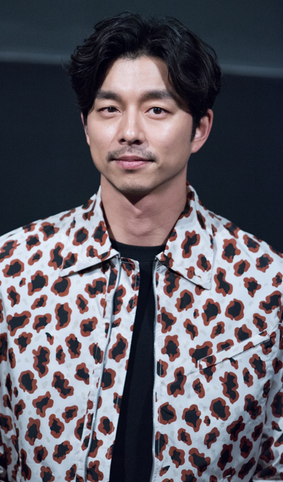
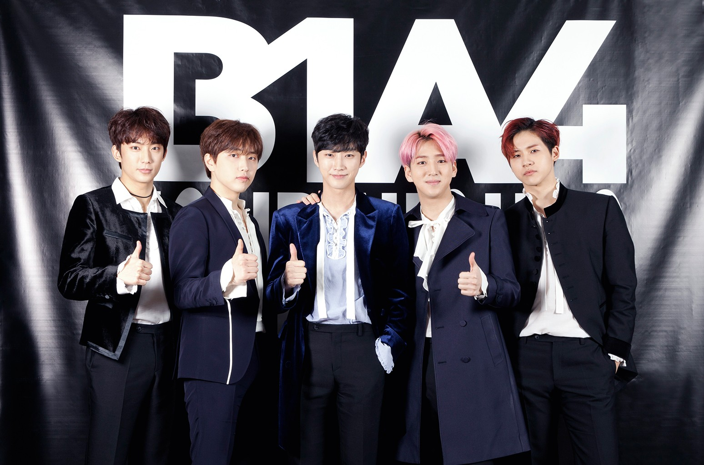

This is top 3 my Korean favourite song
Weekly (song title) has been released on 17 March 2021. This group name is After School. There are have 11 members. I know this group since I was in secondary school. This song is currently popular in Tiktok which is many of people at different country is dance their choreography. It is a bit hard for me even I only remember their first and last part of choreography at climax song because at the middle is quite fast and I could not catch up but I will try it until I can dance their song smoothly. This is my favourite song because when I hear this song it will make me cheer up and happy to through my tough day and this song is really cute. |
I Will Go to You Like the First Snow is the title for this song and has been released on January 7, 2017. This song is the ost for Korean drama Goblin which the drama been released December 2, 2016. I know this song from watching this Korean drama and the strong reason is because I have a fan with the actor in this drama which in Gong Yoo. Therefore, I know this song. After hear it repeatedly it become my favourite because this song is quiet sad and when I want to cry I will turn on this song and treat my feeling until it okay. Hence, the singer of this song is also my favourite singer because all of her song is really good. If I put all my favourite song list, I think this page is not enough because I have so many favourite songs and uncountable because some of it, I could not remember the title. To make it short, I just can list down three of it. |
I miss you is the title for this song. It has been released on 2017. This song is also the ost from Goblin Korean drama. The singer name is So you which is Kang ji-hyun. She is from Sistar group members. I know her because of Sistar group. But from now on Sistar group has been disband because their group already finish their contract with their agency. All of Sistar group song is really cheerful and a bit sexy choreography. This song is really mean for me because the lyrics will make you cry if you feel and understand the lyrics. Even more than two years I still love to hear this song because it will make me calm when I thought about someone. |
My Korean Favourite Actor
| Gong Yoo | July 10, 1979 | ||||
|---|---|---|---|---|---|
|  | Gong Ji-cheol (Korean: 공지철; born July 10, 1979), better known by his stage name Gong Yoo (Korean: 공유), is a South Korean actor.His stage name is a combination of his father's last name "Gong" and of his mother's last name "Yoo". | ||||
| Occupation | Height | Year | His best role in television dramas and films | ||
| Actor | 1.84 m | 2007 | Coffee Prince | ||
| Agent | Year active | 2016-2017 | Guardian: The Lonely and Great God | ||
| Management SOOP | 2001 | 2011 | Silenced | ||
| From- Busan, South Korea | 2016 | Train to Busan | |||
| Education- Kyung Hee University (Theater) | 2016 | The Age of Shadows | |||
My Favourite Korean Boy Group
B1A4
|  | ||||
| Jung Jin-young | ||||
| Shin Dong-woo (CNU) | Cha Sun Woo (Baro) | November 18, 1991 (age 30 years) | ||
| Gong Chan Sik | Lee Jung-hwan (Sandeul)
March 20, 1992 (age 29 years) |
|||
| June 16, 1991 (age 30 years) | August 14, 1993 (age 28 years) | September 5, 1992 (age 29 years) | ||